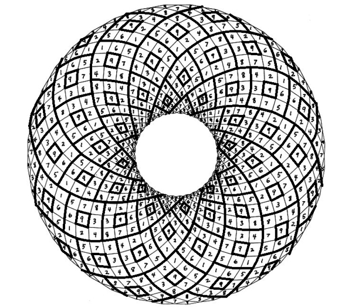

A torus is a geometrical object which could be defined such a tri-dimensional curve which turns over an axis. Here you can calculate the surface of whatever torus you can imagine!
$$ S_T=\pi^2Rr4 $$

Radius r:
Radius R:
Surface:
Back